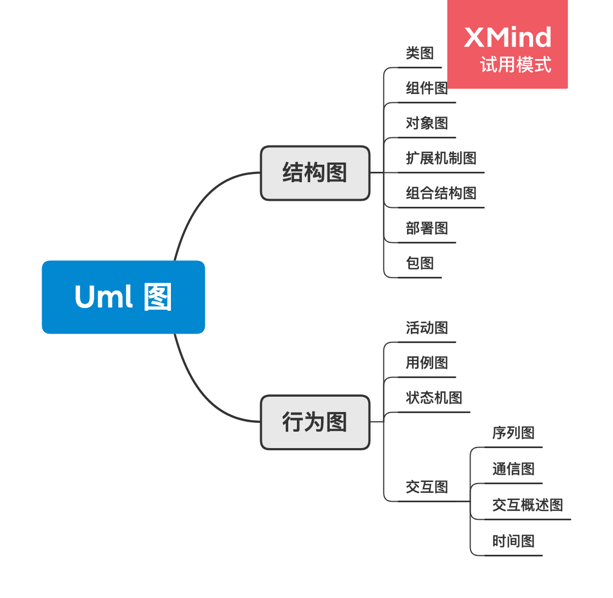

软件方法
建模带来竞争优势。
前言
- “唱曲的名家，唱到极快处，吐字依然干净利落”。
- 不能站在别人的肩膀上看得更远，只是摘抄别人的观点，无意义。要有足够的积累，和深度的思考。
- 涉众（stakeholder）往往会做而不会定义，把不同类型的涉众放在一起访谈时，只会剩下在场军衔最高那个人的意见。
- 需求变更的时候，要注意涉众利益角度分析。
- 项目的流程步骤：
- 寻找老大
- 揣摩愿景
- 业务建模
- 系统用例
- 需求规约
- 分析模型
- 设计开发
- 只有一个领域（核心域）的知识是系统能在市场上生存的理由。
- 拿来主义要摒除门户之见，不关注流派和风格，着力于细节和应用。
建模与 uml
利润 = 需求 - 设计
需求：提升销售
设计：降低开发维护成本
几种弊习：
- 从需求直接映射设计，会得到大量的重复代码。
- 从设计出发来定义需求，会得到一堆假的“需求”。
从涉众视角对系统功能分包会得到需求包。
子系统是基于内部视角根据系统部件的耦合和内聚情况进行切割。
| 需求 | 设计 |
|---|---|
| 卖的视角 | 做的视角 |
| 具体 | 抽象 |
| 产品当项目做 | 项目当产品做 |
| 设计源于需求，高于需求 |
建模工作流
- 业务建模：描述组织内部各系统如何写作，使得组织考验为其他组织提供有价值的服务。新系统不过是组织为了堆外提供更好的服务，对自己的内部重新设计而购买的一个零件。组织引进一个软件系统，和招聘一名新员工没有什么本质区别。如果通过业务建模推导新系统的需求，而不是拍脑袋得出。- 产出的工件是对系统协作关系的描述。
- 需求：哪些是涉众在意的、不能改变的契约，哪些不是-严防“做”影响“卖”。- 产出的工件是涉众视角看到的功能。
- 分析：提炼为了满足功能需求，系统需要封装的核心域机制。对核心域作研究，可以帮助我们达到核心域的复用。- 产出的工件是核心域机制。
- 设计：为了满足质量需求和设计约束，核心域机制如何映射到选定平台上实现。- 产出的工件是核心域机制的实现
不要用设计映射需求。要关注核心域的核心价值。
不同工作流之间产出的工件的区别不在于形式，而在于内容。
要重视建模，要重视建模的工作流（modeling workflow）。
UML 图
现代的 uml 图脱始于“三友”（three amigo）的在 rational 的标准化工作。

uml 里的图不必全部用到（正如没有哪本经典小说使用了所有的单词一样），大多数情况下只需要用到类图、序列图和用例图，（在某些时候，可以用活动图带图序列图）。
要达成基本共识的沟通，首先要使用统一的语言。使用潦草的草图，解释权在画图的人手里，别人看得似懂非懂，其实就是在用形式上的潦草，来代替思考上的潦草。简陋的形式是没有想好的结果，也是可以拿来为草率的思考作为开脱的借口。
即使是在数学和音乐领域，每一种符号背后都蕴含了基本共识。不要违反这种基本共识。
UML 模型不是用来跟涉众沟通的，是用来跟组织内部人员沟通的。
建模和敏捷
敏捷是一个过程家族，是一套 The New Methodology（Martin Fowler语）。
在现实实施中，建模技能不足，流程知识不够的团队在实施过程中，使用“敏捷过程”来掩盖“没有过程”的事实。
你的系统并不特别
见识少的病人总以为自己得了怪病，其实到医院让医生一看，太普通了。
软件开发到了极高境界真的是艺术，恐怕也不是大多数人目前有资格谈的。
模型的组织
建模工作流和所用的 UML 元素不是一一对应的。模型可以按照 UML 元素的种类组织，也可以按照工作流组织。
可以先按工作流组织。
UML 组织的模式如下：
- 业务建模
- 愿景
- 业务用例
- 业务对象
- 需求
- 系统用例
- 分析
- 实体类
- 控制类
- 用例实现
- 边界类
- 设计
- 表示层
- 领域层
- 应用层
- 基础设施层
另一种组织的方式是用试图来做 group。
业务建模之愿景
不要在错误的方向上努力，做得越多，错得越多。
没有愿景的支持，所有的口号就是空话。
业务建模之业务用例图
开发人员有时会有意无意把自己的系统想得太重要，是一种致命的自负。
开发团队经常发些需求“容易变化”，问题的根源之一是需求来路不正。没有把系统当做一个零件放在组织中来看，靠拍脑袋得出需求，导致得出的系统需求是错的。“需求剧烈变化”只是假象，真正的需求没有变过，只是一开始得到的需求是假的。
业务执行者（Business Actor）
以某组织为研究对象，在组织之外和组织交互的其他组织（人群或机构）就是该组织的执行者。因为研究对象是一个组织，所以叫业务执行者。
业务工人（Business Worker）和业务实体
组织内的人称为业务工人（Business Worker）。
业务工人可以被其他业务工人替换，也可以被业务实体替换（Business Entity）。业务实体是组织中的非人智能系统。
责任转移的思想对识别带引入系统的需求很有帮助。开发人员说，“我在开发一个新系统”，其实说的就是“我在开发的一个新的业务实体，取代现有业务工人或业务实体的一些责任”。
举个例子，我们要先画出业务序列图，然后把业务序列图中业务工人对业务实体的操作，映射为系统用例里的动宾结构。而业务用例图里没有业务工人和业务实体，只有业务执行者。
业务用例图和系统用例图的划分边界在组织边界。
这背后的深刻思想是：类通过协作实现用例。组织的业务工人（actor 为 business worker）和业务实体写作完成业务用例，系统的类（主要的角色为 系统、其他 use case）协作完成系统用例。
其他解释：《业务用例与系统用例》
业务用例：业务部门或组织为其外部客户或内部特定人员（业务主角）提供有价值的服务（业务用例）；
系统用例：用户（角色）使用系统时，进行的一次比较完整的交互，并得到了有价值的结果；
功能用例：功能是站在系统内部的静态概念，没有考虑什么人在什么时候如何使用
识别业务执行者
识别业务执行者时，抽象级别应该一致。例如，描述系统之间的抽象，部门应该对部门，而不是部门的员工对部门。
识别业务用例
业务用例指业务执行者希望通过和所研究组织交互获得的价值。业务流程是业务用例的实现。这样的思路对改进业务流程提供的帮助是：先归纳出组织对外提供什么价值，在思考如何更好地优化组织内部流程来实现这些价值。
业务用例是组织的价值，不会因为某个人脑系统或电脑系统的存在而消失而改变。所以“这个系统的业务用例是什么”这样的说法是错误的。
不能把业务用例的某个流程也当做业务用例，应该做顶层抽象，作为业务用例。
不要把组织内部的业务工人对业务实体的操作当做业务用例，因为它们不是组织的价值。
阿布思考法
另一种角度的以终为始。
先想象一个资源不受限时的完美系统，然后用有限的技术资源来山寨（粗劣模仿）这个系统。-本方法出自《Why Not？：How to Use Everyday Ingenuity to Solve Problems Big and Small》
需求之系统用例图
系统边界是责任的边界。
系统用例的定义：系统能够为执行者提供的、涉众可以接受的价值。与业务用例相比，研究对象从组织变成了系统。
系统用例是业务工人和业务实体之间的用例。
用例图不应该出现交叉，不同 actor
使用同一用例，可能意味着用例应该拆分。
需求启发
- 和涉众沟通应该采用视图，而不是模型-介质要产生变化。
- 和涉众沟通应该聚焦涉众利益，而不是需求。